Introduction to parallel computing
A very general (and generic) introduction
CNRS
IMAG
Paul-Valéry Montpellier 3 University
Parallel computing: the intuition
Computing ?
- a computation = a succession of tasks to complete
- a task \approx a single command/action or a group of commands/actions
Why parallel computing?
Objective: accelerate computations <=> reduce computation time
Idea: run multiple tasks in parallel instead of sequentially
Context (level 1)
different tasks to complete
one or more workers to complete the tasks
Sequential computing
- n tasks to complete (n>1)
- 1 worker
Total time (exercise)
\sum_{i=1}^n t_i \sim O(n)\ with t_i time to complete task i}
Parallel computing (the most simple case)
- n tasks to complete (n>1)
- p workers (p>=n)
Total time (exercise)
\underset{i=1,\dots,n}{\text{max}}\{t_i\}\sim O(1)\ with t_i time to complete task i
Potential bottleneck? (exercise)
not enough workers to complete all tasks
Task scheduling
n tasks to complete (n>1)
p workers (p<n)
Need: assign multiple tasks to each worker (and manage this assignment)
Total time (exercise)
\underset{k=1,\dots,p}{\text{max}}\{T_k\}\sim O(n/p)\ with T_k = \sum_{i\in I_k} t_i, total time to complete all tasks assigned to worker k (where I_k is the set of indexes of tasks assigned to worker k)
Illustration: parallel computing (simple case)
a task = “wait 1 \mus”
Objective: run 100 tasks
Number of workers: 1, 2, 4, 6, 8
Why is the time gain not linear?
Context (level 2)
different tasks to complete
multiple workers to complete the tasks
one or more working resources1
Potential bottleneck? (exercise)
not enough resources for all workers
Resource management
- n tasks to complete (n>1)
- p workers (p<n)
- q working resources (q<p)
Need:
- assign workers to each resource (and manage this assignment)
Total time = ? (exercise)
Potential issues? (exercise)
Resource management
Total time = \text{max}_{\ell=1,\dots,q}\{\tau_\ell\}\sim O(n/q)
with \tau_\ell = \sum_{i\in J_\ell} t_i = total time to complete all tasks done on resource \ell (where J_\ell is the set of indexes of tasks assigned done on resource \ell)
Potential issues? multiple workers want to use the same working resources
- they have to wait for their turn (workers are not working all the time)
- risk to jam1 resource access (organizing resource access takes time)
Illustration: overhead for resource access
a task = “wait 1 \mus”
Objective: run 100 tasks
8 computing units
Number of workers: 1, 2, 4, 8, 16, 32
Context (level 3: realistic)
different tasks to complete
multiple workers to complete the tasks
one or more working resources
Input/Output (I/O)
Input: each task requires some materials (data) to be completed, these materials are stored in a storage area (memory)
Output: each task returns a result that need to be put in the storage area (memory)
Examples: vector/matrix/array operations, process the content of multiple files
Input/Output management
- n tasks to complete (n>1)
- p workers (p<n)
- q working resources (q<p)
- tasks need input (data) and produce output (results)
Need:
- load input (data) from storage when needed by a worker to complete a task
- write output (result) to storage when a task is completed
Total time = ? (exercise)
Parallel computing: realistic model
Computing time and potential bottleneck
Total time = \text{max}_{\ell=1,\dots,q}\{\tau_\ell\}
with \tau_\ell = \sum_{i\in J_\ell} t_{i,\text{in}} + t_i + t_{i,\text{out}} = total time to complete all tasks done on resource \ell (where J_\ell is the set of indexes of tasks done on resource \ell)
Potential bottlenecks:
- input (data) are not ready/available when a worker need them to complete a task (the worker have to wait)
- output (results) cannot be written when a worker complete a task (the worker have to wait)
Overhead on memory access
- concurrent access to a memory space when reading input and/or when writing output
- concurrent data transfer from or to memory (the “pipe” are jammed)
Illustration 1: overhead for I/O access
- a task
- simulate a vector of 10 values
- compute the mean
- Objective: run 10000 tasks
- Resources: 8 computing units
- Number of workers: 1, 2, 4, 6, 8

Illustration 2: overhead for I/O access
a task = “compute the sum of a given row in a matrix”
Objective: compute all row-wise sums for a 10000 \times 1000 matrix (i.e. 10000 tasks)
Resources: 8 computing units
Number of workers: 1, 2, 4, 6, 8
The vocabulary of parallel computing
- tasks = a command or a group of commands
- worker = a program or a sub-program (like a thread or a sub-process) → Software
- working resources = processing units → Hardware
- input = data
- output = result
- storage = memory
Attention: “worker” may sometimes refer to a working resource in the literature
Task synchronization
Sometimes tasks cannot be done in parallel
- Specific case: output of task i_1 is input of task i_2
- Need: wait for task i_1 before task i_2 starts
Why parallel computing
Trend over ~50years
- Moore’s Law (doubling the transistor counts every two years) is live
- Single thread performance hit a wall in 2000s
- Along with typical power usage and frequency
- Number of logical cores is doubling every ~3 years since mid-2000
Trend over ~50years (2)
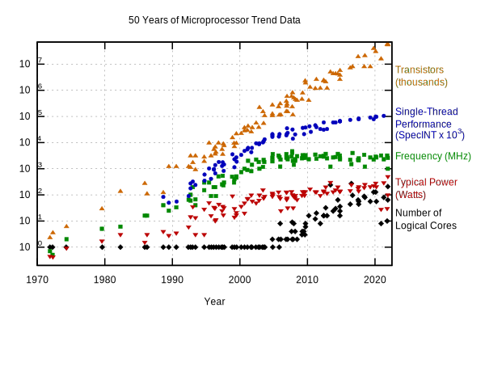Original data up to the year 2010 collected and plotted by M. Horowitz, F. Labonte, O. Shacham, K. Olukotun, L. Hammond, and C. Batten New plot and data collected for 2010-2021 by K. Rupp
Computing units
- CPU :
- 4/8/16+ execution cores (depending on context, laptop, desktop, server)
- Hyperthreading (Intel) or SMT (AMD), x2
- Vector units (multiple instructions processed on a vector of data)
- GPU computing : 100/1000 “simple” cores per card
The reality
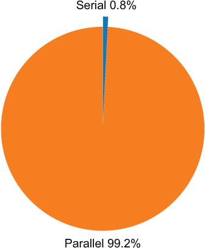A serial application only accesses 0.8% of the processing power of a 16-core CPU.
0.08\% = \frac{1}{16 * 2 (cores + hyperthreading) * \frac{256 (bitwide vector unit}{64(bit double)} = 128}
Benefits of parallel computing
Faster for less development
\frac{S_{up}}{T_{par}} \gg \frac{S_{up}}{T_{seq}}
Ratio of speedup improvment S_{up} over time of development (T_{seq|par}) comparison.
From a development time perspective, return on investment (speedup) is often several magnitudes of order better than pure “serial/sequential” improvment.
Scaling
Simple “divide and conquer” strategies in parallel programming allow to handle data with previously almost untractable sizes and scale before.
Energy efficiency
Note
This is a huge one, in the present context 😬
Difficult to estimate but the Thermal Design Power (TDP), given by hardware manufacturers, is a good rule of thumb. Just factor the number of units, and usual proportionality rules.
Energy efficiency, a bunch of CPUs
Example of “standard” use : 20 16-core Intel Xeon E5-4660 which is 120~W of TDP
P = (20~Processors) * (120~W/~Processors) * (24~hours) = 57.60~kWhrs
Energy efficiency, just a few (big) GPUs
A Tesla V100 GPU is of 300~W of TDP. Let’s use 4 of them.
P = (4~GPUs) * (300~W/~GPUs) * (24~hours) = 28.80~kWhrs
\Longrightarrow half of the power use
Laws
Terms and definitions
- Speedup S_{up}(N): ratio of the time of execution in serial and parallel mode
- Number of computing units N
- P (resp. S) is the parallel (resp. serial) fraction of the time spent in the parallel (resp. serial) part of the program (P+S=1).
Asymptote of parallel computing : Amdahl’s Law
There P is the fraction of the time spent in the parallel part of the program in a sequential execution.
S_{up}(N) \le \frac{1}{S+\frac{P}{N}}
Asymptote of parallel computing : Amdahl’s Law, Graphic
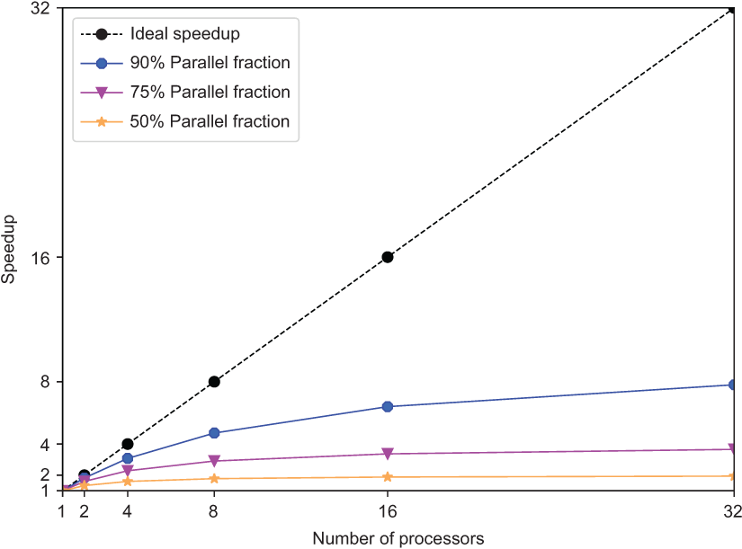Ideal speedup : 100% of the code parallelized; 90%, 75%, and 50% : limited by the fractions of code that remain serial. (Robey and Zamora 2021)
More with (almost) less : the pump it up approach
There now, P is the fraction of the time spent in the parallel part of the program in a parallel execution.

When the size of the problem grows up proportionnaly to the number of computing units.
S_{up}(N) \le N - S*(N-1)
where N is the number of computing units and S the serial fraction as before.
More with (almost) less : graphic
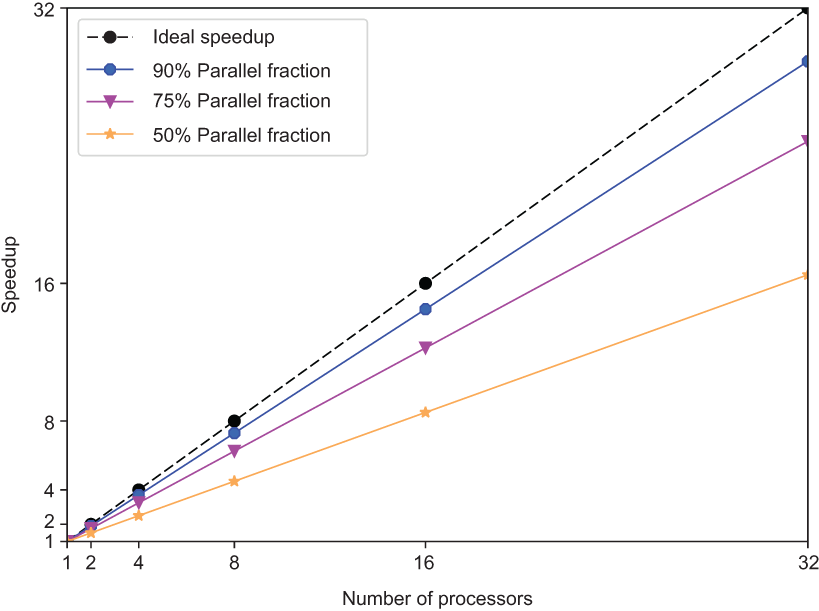Linear growth with the number of processor (and data size too)
Strong vs Weak Scaling, definitions
- Strong Scaling
-
Strong scaling represents the time to solution with respect to the number of processors for a fixed total size.
\Rightarrow Amdahl’s law
- Weak Scaling
-
Weak scaling represents the time to solution with respect to the number of processors for a fixed-sized problem per processor.
\Rightarrow Gustafson’s law
Strong vs Weak Scaling, schemas
Types of parallelism
Flynn’s taxonomy
| Simple Instruction | Multiple Instructions | |
|---|---|---|
| Simple Data | 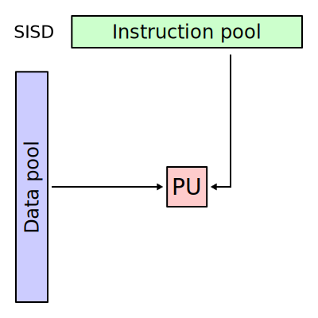 | 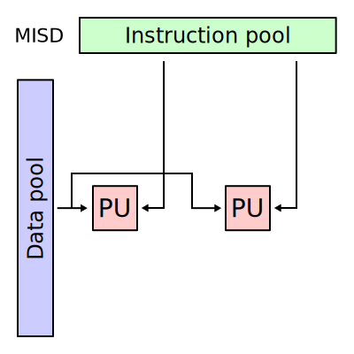 |
| Multiple Data | 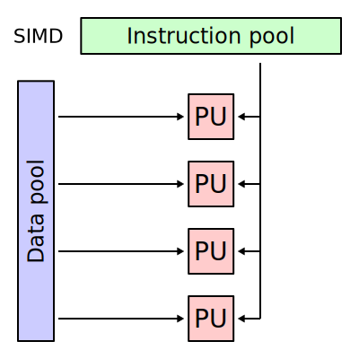 | 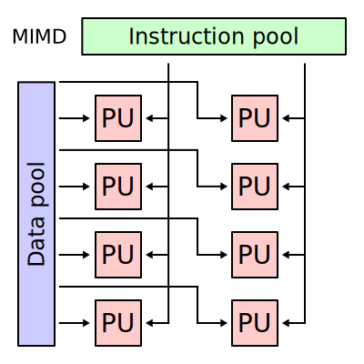 |
A different approach
| Parallelism level | Hardware | Software | Parallelism extraction |
|---|---|---|---|
| Instruction | SIMD (or VLIW) | Intrinsics | Compiler |
| Thread | Multi-core RTOS | Library or language extension | Partitioning/Scheduling (dependency control) |
| Task | Multi-core (w/o RTOS) | Processes (OS level) | Partitioning/Scheduling |
Multi-processing vs Multi-threading


Multi-processing vs Multi-threading, cont.
| Multi-processing | Multi-threading | |
|---|---|---|
| Memory | Exclusive | Shared |
| Communication | Inter-process | At caller site |
| Creation overhead | Heavy | Minimal |
| Concurrency | At OS level | Library/language |
Conclusion
- Parallelism is everywhere, but not always easy to exploit
- Two types of scaling with parallelism : strong and weak
- Several types of parallelism : Flynn’s taxonomy, multhreading vs multiprocessing etc.
References

Introduction to parallel computingAdvanced Programming and Parallel Computing, Master 2 MIASHS